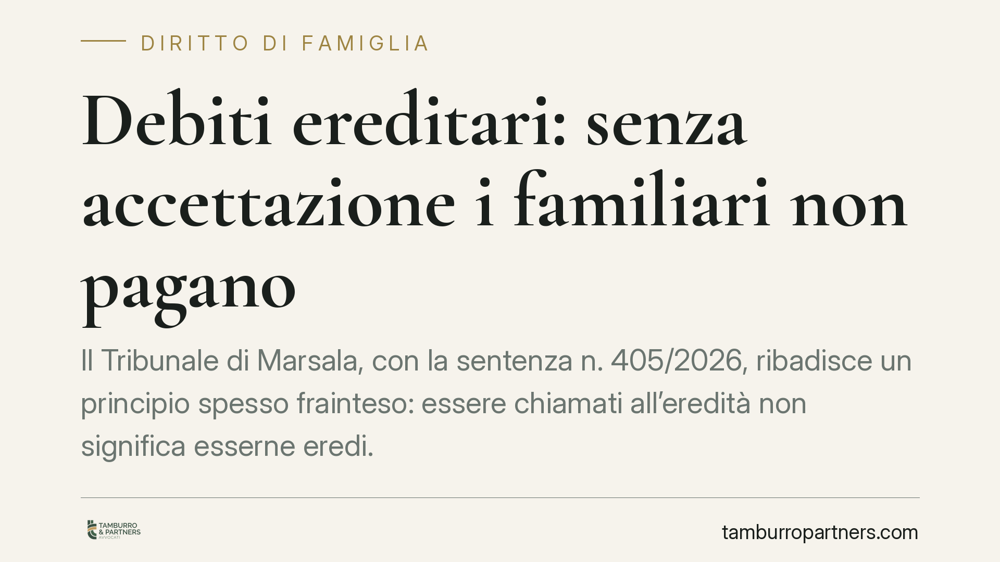

Debiti ereditari: senza accettazione i familiari non pagano
Il Tribunale di Marsala, con la sentenza n. 405/2026, ribadisce un principio spesso frainteso: essere chiamati all'eredità non significa esserne eredi. Senza una vera accettazione, i debiti del defunto non si trasferiscono ai familiari. E la permanenza nella casa comune del coniuge e dei figli conviventi non basta a integrare accettazione tacita. Un punto rilevante per chi riceve richieste di pagamento dai creditori del defunto.

Il fatto
Un creditore aveva agito nei confronti dei familiari di un defunto, pretendendo il pagamento di debiti ereditari. La tesi era semplice: i congiunti erano rimasti nella casa familiare del de cuius, quindi ne avevano di fatto disposto e, per questo, dovevano rispondere delle obbligazioni.
Il Tribunale di Marsala ha respinto la ricostruzione. Ha chiarito che la sola chiamata all'eredità non trasferisce alcun debito e che l'onere di dimostrare l'avvenuta accettazione grava su chi la invoca: il creditore.
Inquadramento normativo
Occorre distinguere due figure che il linguaggio comune confonde. Il chiamato all'eredità è il soggetto a cui l'eredità è offerta; l'erede è chi quell'eredità ha accettato. Solo l'erede risponde dei debiti del defunto. Fino all'accettazione, il chiamato è estraneo alle obbligazioni ereditarie.
L'accettazione può essere espressa o tacita. L'art. 476 del Codice civile prevede l'accettazione tacita quando il chiamato compie un atto che presuppone necessariamente la volontà di accettare e che non avrebbe il diritto di fare se non nella qualità di erede. Non ogni comportamento, dunque, ha questo valore: serve un atto di natura gestoria o dispositiva sui beni ereditari.
L'art. 485 c.c. disciplina la posizione del chiamato che si trovi nel possesso dei beni ereditari, imponendogli termini per l'inventario a pena di conseguenze sull'accettazione. L'art. 481 c.c. consente a chiunque vi abbia interesse — compreso il creditore — di chiedere che sia fissato un termine per accettare o rinunciare (la cosiddetta *actio interrogatoria*).
Sul piano probatorio, l'art. 2697 c.c. è decisivo: chi vuol far valere un diritto in giudizio deve provarne i fatti costitutivi. Se il creditore pretende il pagamento, deve provare che il familiare ha accettato l'eredità. Non è il familiare a dover dimostrare di non essere erede.
Il principio sulla casa familiare
Il passaggio più significativo riguarda la convivenza. Secondo il Tribunale, la permanenza del coniuge superstite e dei figli conviventi nell'abitazione familiare non integra un possesso rilevante ai fini dell'accettazione tacita.
La ragione è coerente con la logica dell'art. 476 c.c.: continuare ad abitare la casa dove già si viveva non è un atto che presuppone la volontà di accettare l'eredità. È la prosecuzione di una situazione di vita preesistente, non un atto dispositivo del patrimonio del defunto. Il coniuge, peraltro, gode di un autonomo diritto di abitazione ai sensi dell'art. 540 c.c.
Implicazioni pratiche
Per chi riceve richieste di pagamento dai creditori del defunto — banche, finanziarie, fornitori, ma anche l'Agenzia delle Entrate — la decisione conferma una linea difensiva concreta.
La richiesta del creditore non si fonda sulla semplice parentela o sulla convivenza. Il creditore deve individuare e provare un atto specifico di accettazione. In assenza, la pretesa è infondata.
Attenzione però: alcuni comportamenti possono davvero valere come accettazione tacita. Riscuotere crediti del defunto, vendere beni ereditari, pagare debiti con denaro dell'asse, promuovere azioni a tutela del patrimonio ereditario sono atti che segnalano l'intenzione di accettare. La convivenza, da sola, no.
Rimane inoltre il rischio dei termini di cui all'art. 485 c.c. per il chiamato che sia nel possesso dei beni. Ignorare le scadenze può produrre effetti non voluti.
Cosa fare in concreto
- Non ignorare le richieste dei creditori, ma non pagare prima di verificare la propria effettiva posizione ereditaria: chiamato non equivale a erede.
- Valutate la rinuncia all'eredità con atto formale davanti al notaio o in cancelleria, se l'asse è passivo o incerto.
- Evitate atti dispositivi sui beni del defunto (prelievi, vendite, riscossioni) prima di aver deciso se accettare: potrebbero configurare accettazione tacita.
- Verificate i termini dell'art. 485 c.c. se vi trovate nel possesso di beni ereditari, per non subire conseguenze automatiche.
- Documentate la natura della convivenza, distinguendola da atti di gestione del patrimonio, in vista di un'eventuale contestazione.
Consigliamo di far esaminare ogni richiesta di pagamento prima di assumere iniziative: la scelta tra accettazione pura, accettazione con beneficio d'inventario e rinuncia va calibrata sulla consistenza reale dell'asse.
---
*Contributo informativo a cura di Tamburro & Partners - Avv. Giuseppe Tamburro. Non costituisce parere legale.*
Ogni famiglia ha il suo equilibrio.
Separazione, divorzio, affidamento, assegno: se vuoi un confronto riservato su una specifica situazione, scrivi allo studio. Ti rispondiamo entro un giorno lavorativo.